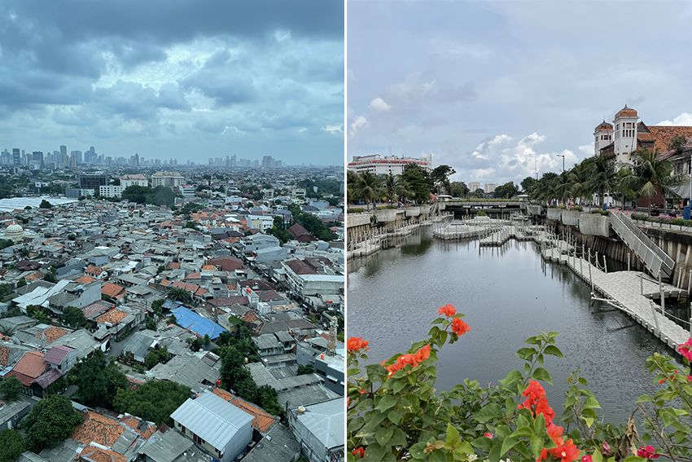
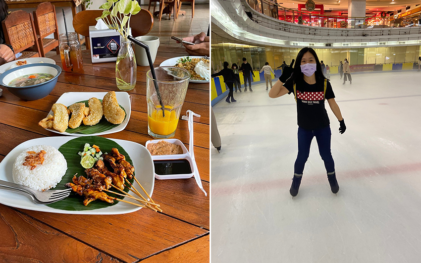
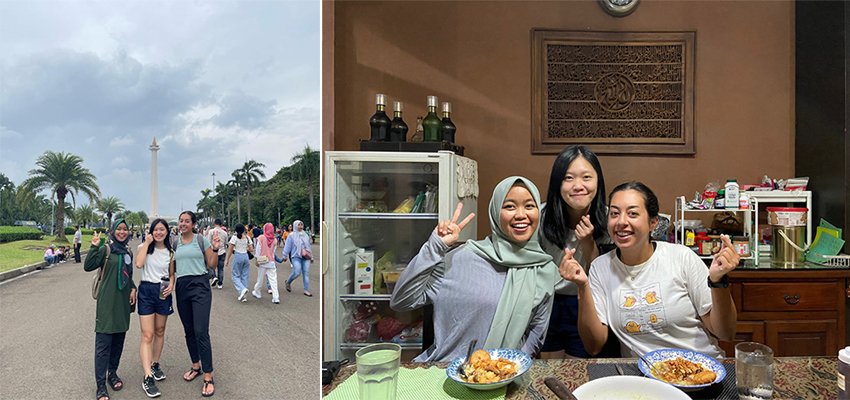
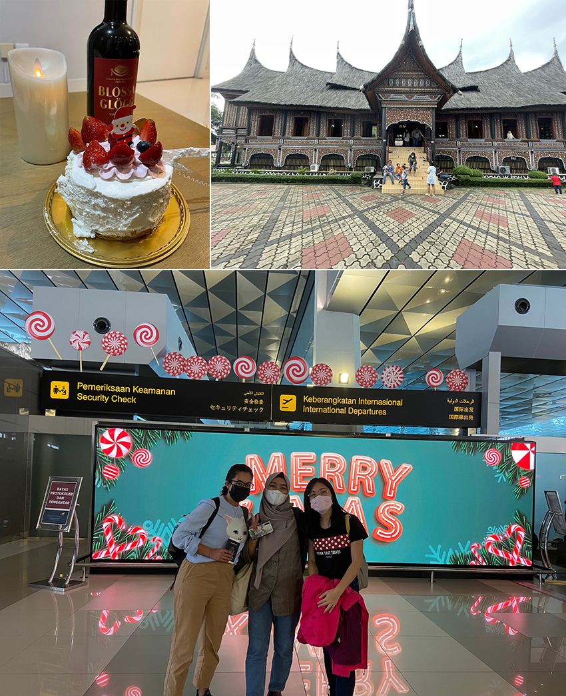

在聖誕節前，我們紛紛搭乘前往印尼的班機，而這五天四夜之旅起因原來自於去年許下的承諾。來自世界各地的我們，一起在Chalmers University of Technology, Sweden相知相遇，研修碩士課程時，我們假日時光常常約出去歐洲各國旅遊，在離別時我們一同約定好每年都要排除萬難讓我們有機會聚在一起，這次的聖誕節決定拜訪印尼朋友Putri的故鄉-印尼首都雅加達。
|  |
由於是後疫情期間出國旅遊，排隊的人數遽增且地勤人員不足，入境相當的費時，但想到我們已經快一年沒見面，臉上還是難掩內心的興奮。終於過了海關見到往日的朋友，我們開心的擁抱，並一起搭計程車前往我們這五天住宿的Airbnb。17樓向下的景觀與距離Central Park 五分鐘的路程，且擁有私人游泳池，入住當天就可以享受其中，這確實是一個很理想的住宿場所…，但到了隔天凌晨四點天都還沒亮，我忽然被外面吵雜的廣播聲給嚇醒，一早起來問才知是禱告的音樂。由於此旋律聽起來酷似台灣的喪禮時會撥放的音樂，害我擔心好久不知外面是否有重大意外發生，最後才知道是一場烏龍。雖然沒有獲得足夠的休息，但第二天我還是打起精神，前往我們的第一站市政廳博物館。不符合聖誕節冷颼颼的天氣，而是夏日炎熱的悶熱感，也只好盡量躲在博物館與購物商場。結束都市發展的導覽介紹，我們到了一間舒適的咖啡廳享用我們的午餐，現打芒果汁加上道地沙嗲配飯，最後再一道炸香蕉最為飯後甜點，實在是非常享受，一抹外面炎熱感，轉換心情到了購物中心的溜冰場，延續在瑞典未一起完成的溜冰之行。
|  |
次日早晨前往印尼國家紀念塔觀光，我們先到傳統市集購買當地小吃，再去到紀念塔前野餐享受夏日早晨的陽光。之前在馬來西亞吃過娘惹糕等傳統小吃，對於東南亞的傳統甜點印象確實不太好，興趣缺缺的我在朋友的推薦下拾起第一塊糕點，吃下之後一改以前的觀點，確實是相當的美味，也是多虧了Putri這位稱職在地導遊，讓我們這短短的幾天吃盡所有當地美食。午後到了Putri家過美好的聖誕節。我帶了從瑞典來的熱紅酒Glogg，搭配聖誕蛋糕，一起暢談我們過去在一起的時光，與這一年來大家各奔東西的日子，好希望時間能停留在此刻，那樣的溫馨與歡笑，皆是我們繼續前進的動力，我也再一次許下明年還要聚在一起旅遊的願望。也許是前往Jamie的故鄉-美國，也許來台觀光，雖然有很多的不確定性，但大家聚在一起的時間愈來愈短，機會也變得相當難得，也因為這樣我們才會更珍惜這些能在一處旅行的時間。
|  |
第四日早晨，我們前往迷你印尼縮影樂園，所謂的縮影樂園是指能看見印尼各式風格的建築與模擬各個島嶼的特色皆融合在此園區當中，也因此需花上整整一天的時間逛。可以漫步優遊，亦可搭乘纜車或遊園車觀光，我們選擇用雙腳一棟一間的觀賞，並留下屬於我們一同走過的足跡。到了傍晚我們前往像是華山文創園區的Hip Area，加上聖誕節的裝飾顯得格外亮眼，在旅遊的尾聲我購買相當多的農特產品，例如：咖啡豆、可可產品、香蕉片等等。加上是最後一天的晚上，當地的山竹及熱帶水果我都要盡量地吃，這些都是無法帶回台灣的寶貝，沒有吃到的水果就只能再等下一次來了。最後一天我們享受印尼的當地早餐，離別時的依依不捨，卻還是需要各自回自己的家，因為只有此時的離別，方有下次再見時的期盼，「望各自珍重，改日再相見」。
|  |